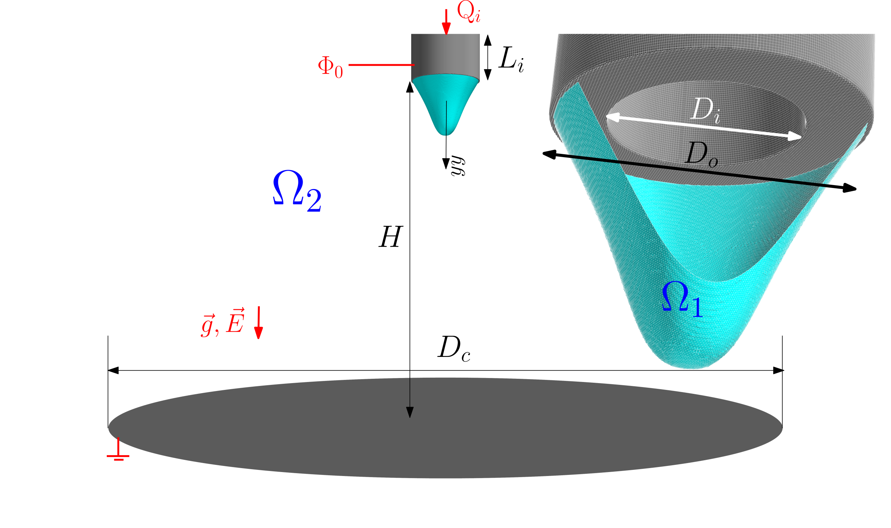

4.2. Three-Dimensional Instabilities
Electrohydrodynamic (EHD) jets are a highly promising technology for generating three-dimensional structures at the micro- and nanoscale. However, the advancement of this technology is hindered by an incomplete understanding of several aspects of its flow mechanisms, such as bending behaviour under higher electric potentials.
A fully coupled numerical simulation of the three-dimensional flow of electrohydrodynamic jets is presented, since non-axisymmetric effects govern a large part of EHD operating regimes. By imposing high values of the electric capillary number, CaE > 0.25, radial instabilities are captured that had not previously been reproduced by other numerical simulations.
Initially, a comparison is performed with previous two-dimensional axisymmetric simulations. Subsequently, the model is validated through comparison with experimental studies of the Taylor cone-jet regime.
4.2.1. Problem Definition
The inlet nozzle has an internal diameter Di of 160 µm and an external diameter Do of 260 µm. The nozzle length, L, is 300 µm.
This length ensures fully developed flow at the nozzle exit and prevents recirculation at the inlet. The nozzle tip is located at a fixed distance H = 1.5 mm from the grounded collector.
To ensure calculation accuracy, the collector has a diameter Dc = 5 mm, allowing the flow to adjust to its natural dynamics without significantly disturbing the jet.

4.2.2. Effect of the Electric Potential
The effect of the electric potential is analysed using the electric capillary number CaE, which represents the ratio between electric stresses and surface-tension forces. As CaE increases, the jet becomes more susceptible to asymmetric deformations and three-dimensional instabilities.
The liquid iso-surfaces make it possible to track the temporal evolution of the jet and identify the transition between the approximately axisymmetric regime and the regimes characterised by radial oscillations and whipping.